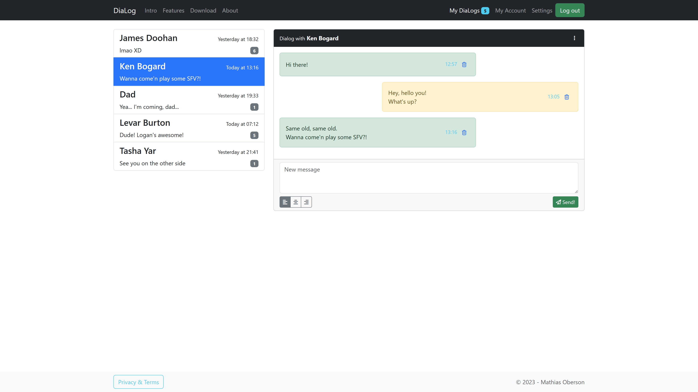

# Bootstrap Practice This material is part of the [Advanced Front-end Development](https://github.com/MediaComem/comem-masrad-dfa) for the [Master of Advances Studies in Rapid Application Development](https://www.he-arc.ch/ingenierie/mas-rad-cas-dar). Hands-on practice on the use of Bootstrap to create a static web page. **You will need** - [Google Chrome][chrome] (recommended, any browser with developer tools will do) - [Visual Studio Code][vscode] (recommended, although any editor could do) - [Live-Server][ls] (should already be installed) **Required reading** - [Bootstrap][bb] - [Bootstrap - Layout management][blm] **Recommended reading** - [Course setup][setup] --- ## What to do? .breadcrumbs[<a href="#1">Bootstrap Practice</a>] 1. Create a new project directory in your file system (`bootstrap-practice`) 2. Download the [basic HTML template][bht] and save it as `index.html` 3. **Using only Bootstrap classes** (that is: no custom CSS neither in HTML `style` attributes, nor in dedicated `.css` files), **recreate the following page**. > Click on the image to see it full-screen. <a class="center" href="images/final-result.png" target="blank"></a> > Try to have a result as faithful as possible compared to the example. > Don't hesitate to ask for more details about some particular elements of the page if you can not deduce it from the image. --- ## How to approach it? .breadcrumbs[<a href="#1">Bootstrap Practice</a>] The steps could be: 1. Analyze very thoroughly the screenshot 2. Try and determine the major "sections" of the layout 3. Try and determine how you will use the grid system 4. Start by the navbar and footer 5. Follow this by creating the list 6. End by the "discussion zone" --- ## Custom CSS .breadcrumbs[<a href="#1">Bootstrap Practice</a>] **You don't have to add any additionnal CSS!** This practice was only realised using Bootstrap classes. Try to do the same. Yes, it could be sometimes easier to just write some custom classes and be done with it. But that would defeat the purpose of this practice 😉 --- ## References .breadcrumbs[<a href="#1">Bootstrap Practice</a>] This exercice will require you to use: - [Navbar][navbar] - [List groups][lists] - [Cards][cards] - [Badges][badges] - [Forms][forms] - [Grid System][grid] > To complete this practice, you'll need to look up in the documentation how to use: - [Alerts][alert] - [Button groups][btn-group] - [Nesting][nest] - The `.active` class [on the navbar][active-nav] and [the list-group elements][active-list] - Be sure to read and understand what Bootstrap offers in terms of [Flexbox][flexbox] classes. --- class: center, middle, image-header ## Disclaimer .breadcrumbs[<a href="#1">Bootstrap Practice</a>] > **Ask questions before throwing your computer out the window.** > Bootstrap can be quite frustrating at first 😉 [flexbox]: https://getbootstrap.com/docs/5.3/utilities/flex/ [active-list]: https://getbootstrap.com/docs/5.3/components/list-group/#active-items [active-nav]: https://getbootstrap.com/docs/5.3/components/navbar/#nav [navbar]: https://getbootstrap.com/docs/5.3/components/navbar/ [lists]: https://getbootstrap.com/docs/5.3/components/list-group/ [cards]: https://getbootstrap.com/docs/5.3/components/card/ [badges]: https://getbootstrap.com/docs/5.3/components/badge/ [forms]: https://getbootstrap.com/docs/5.3/forms/overview/ [grid]: https://getbootstrap.com/docs/5.3/layout/grid/ [bht]: https://gist.githubusercontent.com/Tazaf/420a368389367a83fcfb96ab3a51bf8a/raw/index.html [alert]: https://getbootstrap.com/docs/5.3/components/alerts/ [btn-group]: https://getbootstrap.com/docs/5.3/components/button-group/ [nav-text]: http://getbootstrap.com/components/#navbar-text [nest]: https://getbootstrap.com/docs/5.3/layout/grid/#nesting [bb]: ../bootstrap [blm]: ../bootstrap-layout-management [setup]: ../setup [vscode]: https://code.visualstudio.com/ [chrome]: https://www.google.com/chrome/ [ls]: https://www.npmjs.com/package/live-server